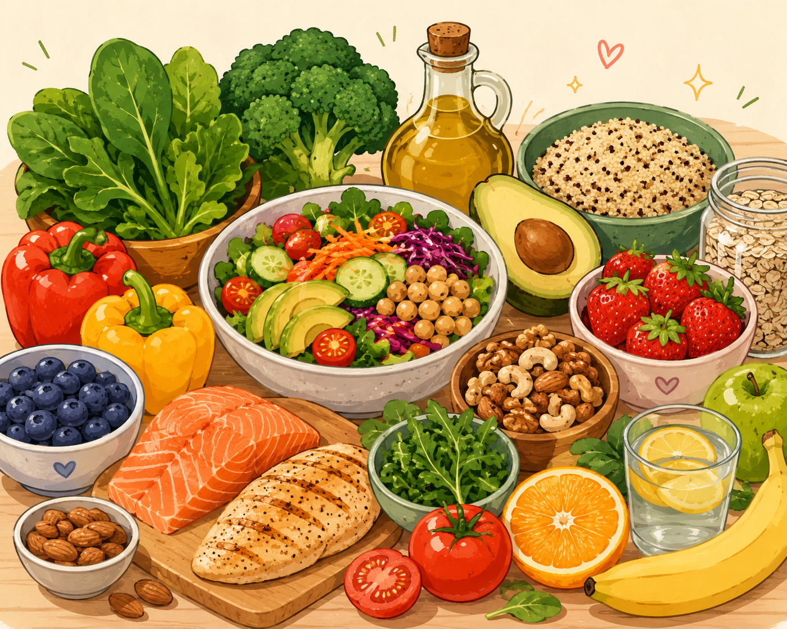
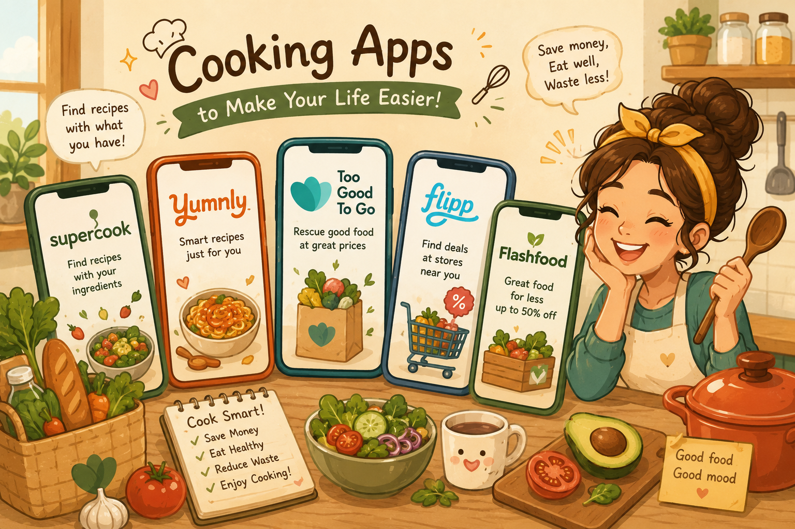

Cooking Resources
Here are some useful cooking resources to help you in the kitchen.
Learn Cooking Basics
- Read the recipe first. Review ingredients and instructions before you start.
- Prepare your ingredients. Measure, wash, and chop ingredients ahead of time.
- Use knives safely. Stress-free cooking starts from safety.
- Preheat your equipment. The right temperature is the key to good food texture.
- Season gradually. Taste as you cook!
- Clean as you go. Remember to turn off the heat!
Cooking Techniques
- Guide to basic cooking: BBC Good Food
- Cooking Techniques: The Kitchn
- Advanced Techniques: 5 Skills recommended by Escoffier
Healthy Eating

- Designing Your Meals: Canada's Food Guide
- Sources of Nutrition: Recommendation from Harvard
- Understanding Food Labels: Canada Government's Guideline
Food Safety by Health Canada
- How to store food safely: Food Safety Tips
- Safe food internal temperatures: Food Temperature Guidelines
- Courses for all levels: Nutrition Education
Cooking Apps

- Find recipes based on ingredients: SuperCook
- Find recipes based on ingredients: AllRecipes
- Find recipes based on ingredients: Yummly
Money matters. Resources to help you stay on Budget
- Buy surplus ingredients with discounts: Too Good To Go
- Find ingredients on-sale nearby: Flipp
- Find local groceries with discount: Flashfood
- Earn cashback on grocery: Checkout 51